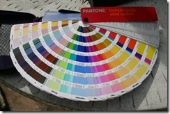

21 novembre 2008
Stage PAO - Jour 2
Jeudi, deuxième journée de PAO ! 
Le matin, suite de l'apprentissage d'Adobe InDesign, Mme Lavoix nous donne à refaire une affiche sur le thème du Poisson Clown.
Elle nous met à disposition le texte et les images et c'est à nous de reproduire la mise en page ainsi que les différents effets : changer le contour d'une image, mettre en forme le texte, recréer des vagues...
Après un travail plutôt efficace avec Arthur, je suis plutôt fier et satisfait du résultat ! Je décide donc d'imprimer, mais surprise je me rend compte que le marron utilisé n’est pas le même sur l’écran que sur la feuille, d'où l'utilité d’avoir un nuancier Pantone pour être sur de la couleur et avoir les références CMJN (Cyan, Magenta, Jaune, Noir).
Le midi j'ai mangé dans le tramway car j'ai dû me déplacer pour diverses raisons, et à causes des manifestations en ville, j'ai failli arriver en retard :D Bref.
L'après-midi, Mme Lavoix continue de nous donner des astuces pour InDesign notamment au niveau de la disposition d'un texte sur une forme et la mise en place de colonnes sur une ou plusieurs pages.
On enchaîne avec un exercice plutôt intéressant : Disposer des articles provenant du journal 20 minutes sur 3 pages.
Maintenant, totale liberté : on choisis le premier titre, la mise en forme, les couleurs et on prend des initiatives comme intégrer des encarts publicitaires.
La journée se termine mais la maquette n'est pas terminée, demain nous devrons la finir pour pouvoir l'imprimer et comparer le travail avec les autres.
Durant la pause de l'après-midi, j'ai pas mal discuté avec Mme Lavoix, c'est une professionnelle vraiment passionnée par son travail et c'est agréable de pouvoir apprendre avec elle.
Demain (Vendredi) dernier jour qui clôturera cette semaine de stage Vidéo/PAO !
Commentaires 0
Aucun commentaire.